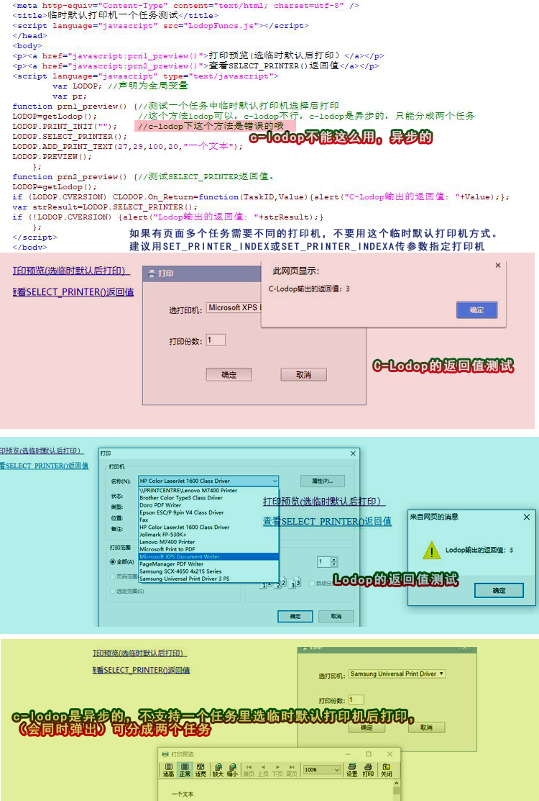

lodop和c-lodop临时默认打印机同一任务测试
之前有博文测试了SELECT_PRINTER()，这个是临时默认打印机，前面的博文对比了如何设置windows默认打印机，如何设置临时默认打印机。以及临时默认打印指定后，在lodop和c-lodop的效果。前面的博文链接（cnblog的）:LODOP指定window默认打印机和临时默认打印机、
之前博文的测试方法：
方法1：设置的windows默认打印机。
方法2：设置页面临时默认打印机
方法3：一个没在代码里指定具体打印机的任务。
方法4：一个在代码里指定了xps具体打印机的任务。
之前博文测试结果：
LODOP效果：
1.没在代码指定具体打印机的，是选择的临时默认打印机。
2.在代码指定了具体的xps打印机的，是xps打印机。
C-LODOP效果：
1.没在代码指定具体打印机的，是选择的临时默认打印机；
2.在代码指定了具体的xps打印机的，还是选择的临时默认打印机。
注意：也就是c-lodop中，页面指定了临时默认打印机，即使在代码里重新指定新的打印机，也是没有效果的。
之前有人测试样例7，先测了临时默认打印机，再测试3,4，由于用的是c-lodop方式，所以无论指定序号，还是指定名称，都无效了，都会还是那个指定的临时默认打印机。
实际测试确实是这样，因此，如果有页面多个任务需要不同的打印机，不要用这个临时默认打印机方式。
建议用SET_PRINTER_INDEX或SET_PRINTER_INDEXA，参考样例5,7，例如样例5的步骤2的这个打印机列表
http://www.c-lodop.com/demolist/PrintSample5.html
http://www.c-lodop.com/demolist/PrintSample7.html
页面指定后传参数方式，传入选择的打印机。
前面测试中，是该先指定临时默认打印机，再在任务中测试。
此外，还有人可能会用到一个任务里，一个任务里选择打印机再打印。(c-lodop下不能这么用）
本文测试下这种使用方法。
正确写法是临时默认打印机和打印分两个任务，可查看该文前面体提到的之前的博文中的临时默认打印机。
简短问答：
1.临时默认打印机能在同一个任务里吗
SELECT_PRINTER是临时默认打印机，lodop和c-lodop下方式不同,c-lodop是异步的，需要分成两个任务，先指定临时默认打印机，再用另一个任务打印。
不建议使用这个语句，建议用SET_PRINTER_INDEX或SET_PRINTER_INDEXA，参考样例5,7，例如样例5的步骤2的这个打印机列表
http://www.c-lodop.com/demolist/PrintSample5.html
http://www.c-lodop.com/demolist/PrintSample7.html
不建议用临时默认打印机，该方法lodop和c-lodop下表现不同，且c-lodop指定后，该页面再用SET_PRINTER_INDEX等指定就会是无效了，只能刷新页面后才能重新选择。
--简短问答结束----
测试例子地址：临时默认打印机一个任务测试
测试代码：
<head> <meta http-equiv="Content-Type" content="text/html; charset=utf-8" /> <title>临时默认打印机一个任务测试</title> <script language="javascript" src="LodopFuncs.js"></script> </head> <body> <p><a href="javascript:prn1_preview()">打印预览(选临时默认后打印）</a></p> <p><a href="javascript:prn2_preview()">查看SELECT_PRINTER()返回值</a></p> <script language="javascript" type="text/javascript"> var LODOP; //声明为全局变量 var pr; function prn1_preview() {//测试一个任务中临时默认打印机选择后打印 LODOP=getLodop(); //这个方法lodop可以，c-lodop不行，c-lodop是异步的，只能分成两个任务 LODOP.PRINT_INIT(""); //c-lodop下这个方法是错误的哦 LODOP.SELECT_PRINTER(); LODOP.ADD_PRINT_TEXT(27,29,100,20,"一个文本"); LODOP.PREVIEW(); }; function prn2_preview() {//测试SELECT_PRINTER返回值。 LODOP=getLodop(); if (LODOP.CVERSION) CLODOP.On_Return=function(TaskID,Value){alert("C-Lodop输出的返回值："+Value);}; var strResult=LODOP.SELECT_PRINTER(); if (!LODOP.CVERSION) {alert("Lodop输出的返回值："+strResult);} }; </script> </body>
图示 ：
